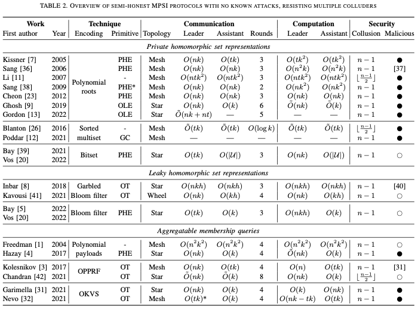

SoK: Collusion-resistant Multi-party Private Set Intersections in the Semi-honest Model
Original paper: [1]
Summary
- This paper presents a summary of multi-party PSI protocols in the semi-honest model excluding protocols that have helper parties.
It classifies PSI into types and present the communication and computational complexities as follows:

Figure 1: Summary of the paper
Notes
- the state of the art 2 party PSI is [2], which is 1 million elements in less than \(6\) seconds over a 100 MBit/s communication channel.
- multi-party PSI is called MPSI
- MPSI typically computes \(X_1 \cap X_i \cap X_n\) and gives the output to \(P_1\).
- This paper focuses on semi-honest, no external parties.
- the fastest works use OKVS and VOLE but they demand large bandwidths.
- no current works are comparable in performance and practical for \(n>2\)
- among many definitions for security the size hiding is the strongest notion of privacy. In a nutshell the definition states that given the result of the intersection, you should not only not learn the other elements but also their sizes.
- the next best is size revealing. Any size revealing protocol can be converted to a size hiding by padding with dummy elements up to an upper bound. The dummy elements can be repeating existing elements or an agreed upon unused element.
Techniques to implement MPSI
Private Homomorphic Set Representations
- Define an operation + such that \(X_1\cap \ldots X_n \approx Dec(Enc(X_1)+\ldots +Enc(X_n))\) holds
Ways to implement this:
- Bitset
When the universe of elements is small, you can use a bitset. The + operation is then the AND operation and ENC and DEC can be any homomorphic encryption that supports the AND operation.
- Hash Sets
Let \(H: U -> \{1,\ldots, m\}\) be a hash function. Use AND operation as the + operation and any supporting homomorphic encryption scheme. Compute the hashes of all elements and set the bucket to \(1\) if zero. Compute the intersection with an AND operation. Then for every element, check if it exists in the set.
- Sorted Multisets
Assume some partial ordering exists in \(U\). The key idea is to combine multiple sets \(X_1,\ldots,X_n\) into multiset \(X_1 \cap\ldots \cap X_n\), and then isolate those elements with multiplicity \(n\). By sorting the resulting multiset, there is a straightforward way of identifying those elements that appear \(n\) times. By also sorting the input sets, we can compute the sorted multiset without performing a full sort operation. Instead, we can combine the sets using a simpler merging operation. To achieve this, Enc simply sorts the set. We can compute the homomorphism + by merging the sets, checking for elements that appear \(n\) times, and removing the other elements. The literature calls this last step as 'monotonizing'.
- Polynomials
Parties compute \(P_{i}\) with their set elements as roots. Use the property \(r_1P_1 + r_2P_2 = r GCD(P_1, P_2)\). Here \(r_1\) and \(r_2\) are random polynomials. This method cannot handle duplicates, as they will appear as multiple roots.
Leaky Homomorphic Set Representations
- Bloom Filters
Use bloom filters and share them. Others check if their elements are in the shared bloom filters.
- Garbled Bloom Filters
Use \(h\) hash functions and thus, \(h\) bins. Let \(b_i\) denote the \(ith\) bin. Initialize all bins to \(\bot\). For every key value pair \((\cdot, y)\), compute all the indices for it. Set all the empty indices with random values such that their XOR is \(y\). (Note: If we have two elements which touch the same buckets, then we have a collision whose probability should be negligible.) After inserting all the elements, set remaining empty bins to a random number.
Aggregatable Membership Queries
The key idea is to do the following:
- Encode the sets.
- Then check membership for an element and output some the result in some confidential form.
- Combine the membership test across encoding of sets.
- Finally open the result.
In a nutshell, define some operator \(+\): \(\lor\limits_{i=1}^n x \in X_n = \mathsf{Reveal}(\mathsf{Query}_{x}(\widehat{X}_{1}+\ldots+ \mathsf{Query}(\widehat{X}_{n})))\)
- Polynomials embedding
Embed the elements as the root of a polynomial \(p(x)\), and give \(rp(x)+P\) to another party. When evaluating the polynomial at \(x=x_0\) a root of \(p(x)\), it becomes \(P\), otherwise a random number except with negligible probability.
- Oblivious Pseudo Random Function (OPRF)
The idea is as follows:
- A sender programs (x,y) for the PRF, and random otherwise.
- The receiver can only make limited queries.
- The receiver queries and his set and some other communication between the sender and the receiver are used to achieve PSI.
- OKVS
An OKVS can be viewed as a non-interactive version of an OPPRF that can also sent in the clear.